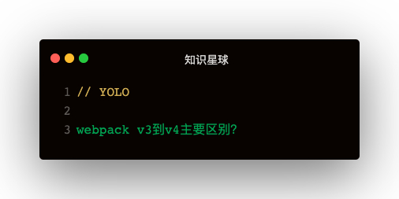

解答
- 自动设置process.env.NODE_EVN：-mode development
- UglifyJsPlugin。直接配置{ optimization: { minimize: true } }
- CommonsChunkPlugin废弃，SplitChunksPlugin取而代之
splitChunks
- chunks：表示哪些代码需要优化
- initial（初始块）
- async（按需加载块）
- all（全部）
- minSize：压缩前的最小模块大小，默认30KB
- minChunks：引用次数。默认为1
- maxAsyncRequests：按需加载时候最大的并行加载请求数，默认为5
- maxInitialRequests: 一个入口最大的并行请求数，默认为3
- name：拆分出来块的名字
- cacheGroups：缓存组
- test：正则匹配哪些模块
- priority：缓存组打包的先后优先级
- reuseExstingChunk：当前代码块已有，就不再产生一个新的代码块
使用splitChunks实现CommonsChunkPlugin的功能
只打包react：
optimization: {
splitChunks: {
chunks: 'all',
cacheGroups: {
vendors: {
test: /react/,
name: 'vendors'
}
}
}
}
打包vendor入口包括的依赖：
{
entry: {
vendor: ['react', 'react-dom'],
}
optimization: {
splitChunks: {
chunks: 'all',
cacheGroups: {
vendors: {
name: 'vendors',
chunk: 'initial'
}
}
}
}
}
splitChunks缺点
第一次打包vue，vuex，后面增加了lodash，浏览器中的vendor会失效